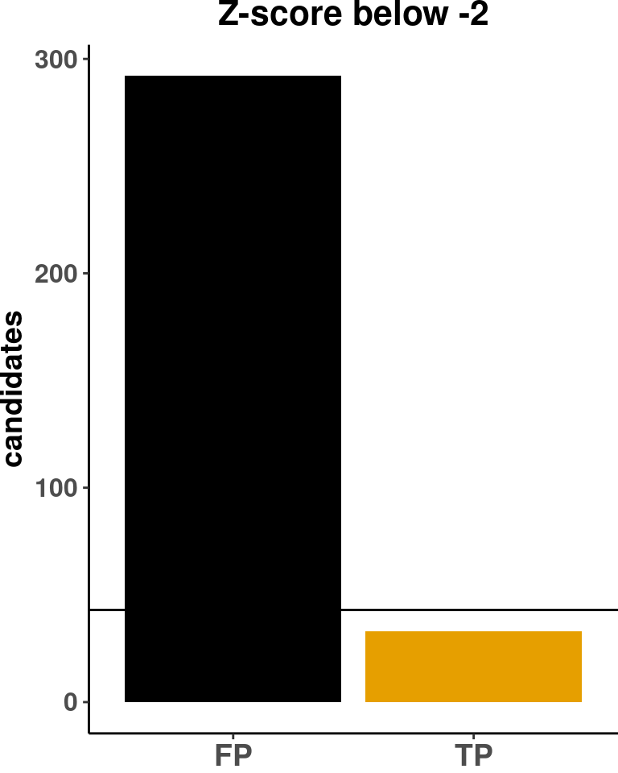

# Load config
source(snakemake@input$config)
source("src/functions/Integration/integrate_annotate_omics.R")
# Load sample annotation
# sa <- fread('/s/project/mitoMultiOmics/multiOMICs_integration/raw_data/proteomics_annotation.tsv')
sa <- fread(snakemake@input$sample_annotation)
sa <- sa[USE_FOR_PROTEOMICS_PAPER == T]
sax <- sa[!is.na(CATEGORY), c("SAMPLE_ID", "KNOWN_MUTATION", "CATEGORY")]
Nsolved <- nrow(sa[CATEGORY %in% c( "I", "IIa", "III") ])
# Read integrated omics file
# rp <- readRDS("/s/project/mitoMultiOmics/multiOMICs_integration/processed_data/integration/patient_omics_full.RDS") %>% as.data.table()
rp <- readRDS(snakemake@input$patient_omics) %>% as.data.table()
# View( sa[SAMPLE_ID %in% rp[is.na(rare)]$SAMPLE_ID] )
# Subset Rare and phenotype mathing cases
rp[ ,MOI_match := F]
rp[MOI %like% "dominant" , MOI_match := T]
rp[potential_biallelic == T & MOI %like% "recessive" , MOI_match := T]
# Correct for genes not yet in OMIM
rp[ SAMPLE_ID == "OM42562" & geneID == "ADPRHL2", MOI_match := T]
rp[ SAMPLE_ID == "OM43933" & geneID == "DNAJC30", MOI_match := T]
rp[ SAMPLE_ID == "OM72697" & geneID == "DNAJC30", MOI_match := T]
rp[ SAMPLE_ID == "OM94976" & geneID == "DNAJC30", MOI_match := T]
rp[ SAMPLE_ID == "OM61355" & geneID == "YARS", MOI_match := T]
rp[ SAMPLE_ID == "OM66072" & geneID == "C19ORF70", MOI_match := T]
rp[ SAMPLE_ID == "OM70698" & geneID == "TXNIP", MOI_match := T]
rp[ SAMPLE_ID == "OM20348" & geneID == "SUCLA2", MOI_match := T]
rp[ SAMPLE_ID == "OM23417" & geneID == "FDXR", MOI_match := T]
# View(rp[causal_gene == T])
rp <- rp[ rare == T & Semantic_sim >2 ]
# Subset matched
rp <- rp[ MOI_match == T]
rp[ , solved_case := SAMPLE_ID %in% sax$SAMPLE_ID]
rp <- merge(rp, sax, by.x = c("SAMPLE_ID", "geneID"), by.y = c("SAMPLE_ID", "KNOWN_MUTATION"), all.x = T)
# Add up- down- outlier class
rp <- add_up_down_class(rp,
Padj_threshold = PADJ_THRESHOLD,
Zscore_threshold = ZSCORE_THRESHOLD,
l2FC_threshold = LOG2FC_THRESHOLD)
############################
MOI match recessive+ dominant
Outliers
rpo <- rp[ up_down_outlier %in% c("Protein_underexpression", "RNA_Protein_underexpression")]
Ncases <- uniqueN(rpo$SAMPLE_ID)
Nentries <- nrow(rpo)
Diagnosis <- nrow(rpo[causal_gene == T])
tp_fp <- data.frame( "Type" = c("TP", "FP"), "N_candidates" = c(Diagnosis, Nentries) )
ggplot(tp_fp, aes(Type, N_candidates, fill = Type)) +
geom_col()+
geom_hline(yintercept = Nsolved)+
scale_fill_colorblind()+
ggtitle( "Significant outlier")+
labs( y = "candidates")+
theme_classic()+
theme( plot.title = element_text(hjust = 0.5, face="bold", size=16),
axis.title.y = element_text( size=14, margin = NULL,face="bold"),
axis.title.x = element_blank(),
legend.title = element_blank(),
legend.position = "none",
axis.text.x = element_text(face="bold", size=14),
axis.text.y = element_text(face="bold", size=12),
plot.margin = margin(0, 0, 0, 0, "cm") )
Z-score
rpz <- rp[PROTEIN_ZSCORE < -2]
Ncases_Z <- uniqueN(rpz$SAMPLE_ID)
Nentries_Z <- nrow(rpz)
Diagnosis_Z <- nrow(rpz[causal_gene == T])
tp_fp_Z <- data.frame( "Type" = c("TP", "FP"), "N_candidates" = c(Diagnosis_Z, Nentries_Z) )
ggplot(tp_fp_Z, aes(Type, N_candidates, fill = Type)) +
geom_col()+
scale_fill_colorblind()+
geom_hline(yintercept = Nsolved)+
ggtitle( "Z-score below -2")+
labs( y = "candidates")+
theme_classic()+
theme( plot.title = element_text(hjust = 0.5, face="bold", size=16),
axis.title.y = element_text( size=14, margin = NULL,face="bold"),
axis.title.x = element_blank(),
legend.title = element_blank(),
legend.position = "none",
axis.text.x = element_text(face="bold", size=14),
axis.text.y = element_text(face="bold", size=12),
plot.margin = margin(0, 0, 0, 0, "cm") )

######################################
rp <- rp[solved_case == T]
MOI match, Solved cases only
Outliers
rpo <- rp[ up_down_outlier %in% c("Protein_underexpression", "RNA_Protein_underexpression")]
Ncases <- uniqueN(rpo$SAMPLE_ID)
Nentries <- nrow(rpo)
Diagnosis <- nrow(rpo[causal_gene == T])
tp_fp <- data.frame( "Type" = c("TP", "FP"), "N_candidates" = c(Diagnosis, Nentries) )
ggplot(tp_fp, aes(Type, N_candidates, fill = Type)) +
geom_col()+
geom_hline(yintercept = Nsolved, linetype = "dashed")+
scale_fill_colorblind()+
ggtitle( "Significant outlier")+
labs( y = "candidates")+
theme_classic()+
theme( plot.title = element_text(hjust = 0.5, face="bold", size=14),
axis.title.y = element_text( size=14, margin = NULL,face="bold"),
axis.title.x = element_blank(),
legend.title = element_blank(),
legend.position = "none",
axis.text.x = element_text(face="bold", size=14),
axis.text.y = element_text(face="bold", size=12),
plot.margin = margin(0, 0, 0, 0, "cm") )
paste( "Sensitivity", round(100*Diagnosis/Nsolved) , "%" )
## [1] "Sensitivity 47 %"
paste( "Specifisity", round(100*Diagnosis/Nentries) , "%" )
## [1] "Specifisity 74 %"
Z-score
rpz <- rp[PROTEIN_ZSCORE < -2]
Ncases_Z <- uniqueN(rpz$SAMPLE_ID)
Nentries_Z <- nrow(rpz)
Diagnosis_Z <- nrow(rpz[causal_gene == T])
tp_fp_Z <- data.frame( "Type" = c("TP", "FP"), "N_candidates" = c(Diagnosis_Z, Nentries_Z) )
ggplot(tp_fp_Z, aes(Type, N_candidates, fill = Type)) +
geom_col()+
scale_fill_colorblind()+
geom_hline(yintercept = Nsolved, linetype = "dashed")+
ggtitle( "Z-score < -2")+
labs( y = "candidates")+
theme_classic()+
theme( plot.title = element_text(hjust = 0.5, face="bold", size=14),
axis.title.y = element_text( size=14, margin = NULL,face="bold"),
axis.title.x = element_blank(),
legend.title = element_blank(),
legend.position = "none",
axis.text.x = element_text(face="bold", size=14),
axis.text.y = element_text(face="bold", size=12),
plot.margin = margin(0, 0, 0, 0, "cm") )
paste( "Sensitivity", round(100*Diagnosis_Z/Nsolved) , "%" )
## [1] "Sensitivity 77 %"
paste( "Specifisity", round(100*Diagnosis_Z/Nentries_Z) , "%" )
## [1] "Specifisity 30 %"
# View(rpo[ solved_case == F & potential_biallelic == T])
IyctLS0KIycgdGl0bGU6IEZpZ3VyZSA0IEF1dG9tYXRpYyBhbmFseXNpcwojJyBhdXRob3I6IHNtaXJub3ZkCiMnIHdiOgojJyAgaW5wdXQ6CiMnICAtIGNvbmZpZzogJ3NyYy9jb25maWcuUicKIycgIC0gc2FtcGxlX2Fubm90YXRpb246ICdgc20gY29uZmlnWyJBTk5PVEFUSU9OIl1gJwojJyAgLSBwYXRpZW50X29taWNzOiAnYHNtIGNvbmZpZ1siUFJPQ19EQVRBIl0gKyAiL2ludGVncmF0aW9uL3BhdGllbnRfb21pY3NfZnVsbC5SRFMiYCcKIycgIG91dHB1dDoKIycgb3V0cHV0OiAKIycgICBodG1sX2RvY3VtZW50OgojJyAgICBjb2RlX2ZvbGRpbmc6IGhpZGUKIycgICAgY29kZV9kb3dubG9hZDogVFJVRQojJy0tLQoKIyBMb2FkIGNvbmZpZwpzb3VyY2Uoc25ha2VtYWtlQGlucHV0JGNvbmZpZykKc291cmNlKCJzcmMvZnVuY3Rpb25zL0ludGVncmF0aW9uL2ludGVncmF0ZV9hbm5vdGF0ZV9vbWljcy5SIikKCiMgTG9hZCBzYW1wbGUgYW5ub3RhdGlvbgojIHNhIDwtIGZyZWFkKCcvcy9wcm9qZWN0L21pdG9NdWx0aU9taWNzL211bHRpT01JQ3NfaW50ZWdyYXRpb24vcmF3X2RhdGEvcHJvdGVvbWljc19hbm5vdGF0aW9uLnRzdicpCnNhIDwtIGZyZWFkKHNuYWtlbWFrZUBpbnB1dCRzYW1wbGVfYW5ub3RhdGlvbikKc2EgPC0gc2FbVVNFX0ZPUl9QUk9URU9NSUNTX1BBUEVSID09IFRdCnNheCA8LSBzYVshaXMubmEoQ0FURUdPUlkpLCBjKCJTQU1QTEVfSUQiLCAiS05PV05fTVVUQVRJT04iLCAiQ0FURUdPUlkiKV0KTnNvbHZlZCA8LSBucm93KHNhW0NBVEVHT1JZICVpbiUgYyggIkkiLCAiSUlhIiwgIklJSSIpIF0pCgoKIyBSZWFkIGludGVncmF0ZWQgb21pY3MgZmlsZSAKIyBycCA8LSByZWFkUkRTKCIvcy9wcm9qZWN0L21pdG9NdWx0aU9taWNzL211bHRpT01JQ3NfaW50ZWdyYXRpb24vcHJvY2Vzc2VkX2RhdGEvaW50ZWdyYXRpb24vcGF0aWVudF9vbWljc19mdWxsLlJEUyIpICU+JSBhcy5kYXRhLnRhYmxlKCkKcnAgPC0gcmVhZFJEUyhzbmFrZW1ha2VAaW5wdXQkcGF0aWVudF9vbWljcykgJT4lIGFzLmRhdGEudGFibGUoKQoKIyBWaWV3KCBzYVtTQU1QTEVfSUQgJWluJSBycFtpcy5uYShyYXJlKV0kU0FNUExFX0lEXSApCgojIFN1YnNldCBSYXJlIGFuZCBwaGVub3R5cGUgbWF0aGluZyBjYXNlcwpycFsgLE1PSV9tYXRjaCA6PSBGXQpycFtNT0kgJWxpa2UlICJkb21pbmFudCIgLCBNT0lfbWF0Y2ggOj0gVF0KcnBbcG90ZW50aWFsX2JpYWxsZWxpYyA9PSBUICYgTU9JICVsaWtlJSAicmVjZXNzaXZlIiAgLCBNT0lfbWF0Y2ggOj0gVF0KCiMgQ29ycmVjdCBmb3IgZ2VuZXMgbm90IHlldCBpbiBPTUlNCnJwWyBTQU1QTEVfSUQgPT0gIk9NNDI1NjIiICYgZ2VuZUlEID09ICJBRFBSSEwyIiwgTU9JX21hdGNoIDo9IFRdCnJwWyBTQU1QTEVfSUQgPT0gIk9NNDM5MzMiICYgZ2VuZUlEID09ICJETkFKQzMwIiwgTU9JX21hdGNoIDo9IFRdCnJwWyBTQU1QTEVfSUQgPT0gIk9NNzI2OTciICYgZ2VuZUlEID09ICJETkFKQzMwIiwgTU9JX21hdGNoIDo9IFRdCnJwWyBTQU1QTEVfSUQgPT0gIk9NOTQ5NzYiICYgZ2VuZUlEID09ICJETkFKQzMwIiwgTU9JX21hdGNoIDo9IFRdCnJwWyBTQU1QTEVfSUQgPT0gIk9NNjEzNTUiICYgZ2VuZUlEID09ICJZQVJTIiwgTU9JX21hdGNoIDo9IFRdCnJwWyBTQU1QTEVfSUQgPT0gIk9NNjYwNzIiICYgZ2VuZUlEID09ICJDMTlPUkY3MCIsIE1PSV9tYXRjaCA6PSBUXQpycFsgU0FNUExFX0lEID09ICJPTTcwNjk4IiAmIGdlbmVJRCA9PSAiVFhOSVAiLCBNT0lfbWF0Y2ggOj0gVF0KCnJwWyBTQU1QTEVfSUQgPT0gIk9NMjAzNDgiICYgZ2VuZUlEID09ICJTVUNMQTIiLCBNT0lfbWF0Y2ggOj0gVF0KcnBbIFNBTVBMRV9JRCA9PSAiT00yMzQxNyIgJiBnZW5lSUQgPT0gIkZEWFIiLCBNT0lfbWF0Y2ggOj0gVF0KCiMgVmlldyhycFtjYXVzYWxfZ2VuZSA9PSBUXSkKCnJwIDwtIHJwWyByYXJlID09IFQgJiBTZW1hbnRpY19zaW0gPjIgXQojIFN1YnNldCBtYXRjaGVkCnJwIDwtIHJwWyBNT0lfbWF0Y2ggPT0gVF0KcnBbICwgc29sdmVkX2Nhc2UgOj0gU0FNUExFX0lEICVpbiUgc2F4JFNBTVBMRV9JRF0KcnAgPC0gbWVyZ2UocnAsIHNheCwgYnkueCA9IGMoIlNBTVBMRV9JRCIsICJnZW5lSUQiKSwgYnkueSA9IGMoIlNBTVBMRV9JRCIsICJLTk9XTl9NVVRBVElPTiIpLCAgYWxsLnggPSBUKQoKCgoKIyBBZGQgdXAtIGRvd24tIG91dGxpZXIgY2xhc3MKcnAgPC0gYWRkX3VwX2Rvd25fY2xhc3MocnAsIAogICAgICAgICAgICAgICAgICAgICAgICBQYWRqX3RocmVzaG9sZCA9ICBQQURKX1RIUkVTSE9MRCwKICAgICAgICAgICAgICAgICAgICAgICAgWnNjb3JlX3RocmVzaG9sZCA9IFpTQ09SRV9USFJFU0hPTEQsIAogICAgICAgICAgICAgICAgICAgICAgICBsMkZDX3RocmVzaG9sZCA9IExPRzJGQ19USFJFU0hPTEQpCgojIyMjIyMjIyMjIyMjIyMjIyMjIyMjIyMjIyMjCgojJyAjIE1PSSBtYXRjaCByZWNlc3NpdmUrIGRvbWluYW50CiMnIE91dGxpZXJzIApycG8gPC0gcnBbIHVwX2Rvd25fb3V0bGllciAlaW4lIGMoIlByb3RlaW5fdW5kZXJleHByZXNzaW9uIiwgIlJOQV9Qcm90ZWluX3VuZGVyZXhwcmVzc2lvbiIpXQpOY2FzZXMgPC0gdW5pcXVlTihycG8kU0FNUExFX0lEKQpOZW50cmllcyA8LSBucm93KHJwbykKRGlhZ25vc2lzIDwtIG5yb3cocnBvW2NhdXNhbF9nZW5lID09IFRdKQp0cF9mcCA8LSBkYXRhLmZyYW1lKCAiVHlwZSIgPSBjKCJUUCIsICJGUCIpLCAiTl9jYW5kaWRhdGVzIiA9ICBjKERpYWdub3NpcywgTmVudHJpZXMpICkKCiMrIGZpZy53aWR0aD00LCBmaWcuaGVpZ2h0PTUKZ2dwbG90KHRwX2ZwLCBhZXMoVHlwZSwgIE5fY2FuZGlkYXRlcywgZmlsbCA9IFR5cGUpKSArCiAgZ2VvbV9jb2woKSsKICBnZW9tX2hsaW5lKHlpbnRlcmNlcHQgPSBOc29sdmVkKSsgCiAgc2NhbGVfZmlsbF9jb2xvcmJsaW5kKCkrCiAgZ2d0aXRsZSggIlNpZ25pZmljYW50IG91dGxpZXIiKSsKICBsYWJzKCB5ID0gImNhbmRpZGF0ZXMiKSsKICB0aGVtZV9jbGFzc2ljKCkrCiAgdGhlbWUoIHBsb3QudGl0bGUgPSBlbGVtZW50X3RleHQoaGp1c3QgPSAwLjUsIGZhY2U9ImJvbGQiLCAgc2l6ZT0xNiksCiAgICAgICAgIGF4aXMudGl0bGUueSA9IGVsZW1lbnRfdGV4dCggc2l6ZT0xNCwgbWFyZ2luID0gTlVMTCxmYWNlPSJib2xkIiksCiAgICAgICAgIGF4aXMudGl0bGUueCA9IGVsZW1lbnRfYmxhbmsoKSwKICAgICAgICAgbGVnZW5kLnRpdGxlID0gZWxlbWVudF9ibGFuaygpLAogICAgICAgICBsZWdlbmQucG9zaXRpb24gPSAibm9uZSIsCiAgICAgICAgIGF4aXMudGV4dC54ID0gZWxlbWVudF90ZXh0KGZhY2U9ImJvbGQiLCAgc2l6ZT0xNCksCiAgICAgICAgIGF4aXMudGV4dC55ID0gZWxlbWVudF90ZXh0KGZhY2U9ImJvbGQiLCAgc2l6ZT0xMiksCiAgICAgICAgIHBsb3QubWFyZ2luID0gbWFyZ2luKDAsIDAsIDAsIDAsICJjbSIpICkgCgoKIycgWi1zY29yZQpycHogPC0gcnBbUFJPVEVJTl9aU0NPUkUgPCAtMl0KTmNhc2VzX1ogPC0gdW5pcXVlTihycHokU0FNUExFX0lEKQpOZW50cmllc19aIDwtIG5yb3cocnB6KQpEaWFnbm9zaXNfWiA8LSBucm93KHJweltjYXVzYWxfZ2VuZSA9PSBUXSkKdHBfZnBfWiA8LSBkYXRhLmZyYW1lKCAiVHlwZSIgPSBjKCJUUCIsICJGUCIpLCAiTl9jYW5kaWRhdGVzIiA9ICBjKERpYWdub3Npc19aLCBOZW50cmllc19aKSApCgojKyBmaWcud2lkdGg9NCwgZmlnLmhlaWdodD01CmdncGxvdCh0cF9mcF9aLCBhZXMoVHlwZSwgIE5fY2FuZGlkYXRlcywgZmlsbCA9IFR5cGUpKSArCiAgZ2VvbV9jb2woKSsKICBzY2FsZV9maWxsX2NvbG9yYmxpbmQoKSsKICBnZW9tX2hsaW5lKHlpbnRlcmNlcHQgPSBOc29sdmVkKSsgCiAgZ2d0aXRsZSggIlotc2NvcmUgYmVsb3cgLTIiKSsKICBsYWJzKCB5ID0gImNhbmRpZGF0ZXMiKSsKICB0aGVtZV9jbGFzc2ljKCkrCiAgdGhlbWUoIHBsb3QudGl0bGUgPSBlbGVtZW50X3RleHQoaGp1c3QgPSAwLjUsIGZhY2U9ImJvbGQiLCAgc2l6ZT0xNiksCiAgICAgICAgIGF4aXMudGl0bGUueSA9IGVsZW1lbnRfdGV4dCggc2l6ZT0xNCwgbWFyZ2luID0gTlVMTCxmYWNlPSJib2xkIiksCiAgICAgICAgIGF4aXMudGl0bGUueCA9IGVsZW1lbnRfYmxhbmsoKSwKICAgICAgICAgbGVnZW5kLnRpdGxlID0gZWxlbWVudF9ibGFuaygpLAogICAgICAgICBsZWdlbmQucG9zaXRpb24gPSAibm9uZSIsCiAgICAgICAgIGF4aXMudGV4dC54ID0gZWxlbWVudF90ZXh0KGZhY2U9ImJvbGQiLCAgc2l6ZT0xNCksCiAgICAgICAgIGF4aXMudGV4dC55ID0gZWxlbWVudF90ZXh0KGZhY2U9ImJvbGQiLCAgc2l6ZT0xMiksCiAgICAgICAgIHBsb3QubWFyZ2luID0gbWFyZ2luKDAsIDAsIDAsIDAsICJjbSIpICkgCgoKCiMjIyMjIyMjIyMjIyMjIyMjIyMjIyMjIyMjIyMjIyMjIyMjIyMjCgpycCA8LSBycFtzb2x2ZWRfY2FzZSA9PSBUXQoKIycgIyBNT0kgbWF0Y2gsIFNvbHZlZCBjYXNlcyBvbmx5CiMnIE91dGxpZXJzIApycG8gPC0gcnBbIHVwX2Rvd25fb3V0bGllciAlaW4lIGMoIlByb3RlaW5fdW5kZXJleHByZXNzaW9uIiwgIlJOQV9Qcm90ZWluX3VuZGVyZXhwcmVzc2lvbiIpXQpOY2FzZXMgPC0gdW5pcXVlTihycG8kU0FNUExFX0lEKQpOZW50cmllcyA8LSBucm93KHJwbykKRGlhZ25vc2lzIDwtIG5yb3cocnBvW2NhdXNhbF9nZW5lID09IFRdKQp0cF9mcCA8LSBkYXRhLmZyYW1lKCAiVHlwZSIgPSBjKCJUUCIsICJGUCIpLCAiTl9jYW5kaWRhdGVzIiA9ICBjKERpYWdub3NpcywgTmVudHJpZXMpICkKCiMrIGZpZy53aWR0aD0yLCBmaWcuaGVpZ2h0PTMKZ2dwbG90KHRwX2ZwLCBhZXMoVHlwZSwgIE5fY2FuZGlkYXRlcywgZmlsbCA9IFR5cGUpKSArCiAgZ2VvbV9jb2woKSsKICBnZW9tX2hsaW5lKHlpbnRlcmNlcHQgPSBOc29sdmVkLCBsaW5ldHlwZSA9ICJkYXNoZWQiKSsgCiAgc2NhbGVfZmlsbF9jb2xvcmJsaW5kKCkrCiAgZ2d0aXRsZSggIlNpZ25pZmljYW50IG91dGxpZXIiKSsKICBsYWJzKCB5ID0gImNhbmRpZGF0ZXMiKSsKICB0aGVtZV9jbGFzc2ljKCkrCiAgdGhlbWUoIHBsb3QudGl0bGUgPSBlbGVtZW50X3RleHQoaGp1c3QgPSAwLjUsIGZhY2U9ImJvbGQiLCAgc2l6ZT0xNCksCiAgICAgICAgIGF4aXMudGl0bGUueSA9IGVsZW1lbnRfdGV4dCggc2l6ZT0xNCwgbWFyZ2luID0gTlVMTCxmYWNlPSJib2xkIiksCiAgICAgICAgIGF4aXMudGl0bGUueCA9IGVsZW1lbnRfYmxhbmsoKSwKICAgICAgICAgbGVnZW5kLnRpdGxlID0gZWxlbWVudF9ibGFuaygpLAogICAgICAgICBsZWdlbmQucG9zaXRpb24gPSAibm9uZSIsCiAgICAgICAgIGF4aXMudGV4dC54ID0gZWxlbWVudF90ZXh0KGZhY2U9ImJvbGQiLCAgc2l6ZT0xNCksCiAgICAgICAgIGF4aXMudGV4dC55ID0gZWxlbWVudF90ZXh0KGZhY2U9ImJvbGQiLCAgc2l6ZT0xMiksCiAgICAgICAgIHBsb3QubWFyZ2luID0gbWFyZ2luKDAsIDAsIDAsIDAsICJjbSIpICkgCnBhc3RlKCAiU2Vuc2l0aXZpdHkiLCByb3VuZCgxMDAqRGlhZ25vc2lzL05zb2x2ZWQpICwgIiUiICApCnBhc3RlKCAiU3BlY2lmaXNpdHkiLCByb3VuZCgxMDAqRGlhZ25vc2lzL05lbnRyaWVzKSAsICIlIiAgKQoKIycgWi1zY29yZQpycHogPC0gcnBbUFJPVEVJTl9aU0NPUkUgPCAtMl0KTmNhc2VzX1ogPC0gdW5pcXVlTihycHokU0FNUExFX0lEKQpOZW50cmllc19aIDwtIG5yb3cocnB6KQpEaWFnbm9zaXNfWiA8LSBucm93KHJweltjYXVzYWxfZ2VuZSA9PSBUXSkKdHBfZnBfWiA8LSBkYXRhLmZyYW1lKCAiVHlwZSIgPSBjKCJUUCIsICJGUCIpLCAiTl9jYW5kaWRhdGVzIiA9ICBjKERpYWdub3Npc19aLCBOZW50cmllc19aKSApCgojKyBmaWcud2lkdGg9MiwgZmlnLmhlaWdodD0zCmdncGxvdCh0cF9mcF9aLCBhZXMoVHlwZSwgIE5fY2FuZGlkYXRlcywgZmlsbCA9IFR5cGUpKSArCiAgZ2VvbV9jb2woKSsKICBzY2FsZV9maWxsX2NvbG9yYmxpbmQoKSsKICBnZW9tX2hsaW5lKHlpbnRlcmNlcHQgPSBOc29sdmVkLCBsaW5ldHlwZSA9ICJkYXNoZWQiKSsgCiAgZ2d0aXRsZSggIlotc2NvcmUgPCAtMiIpKwogIGxhYnMoIHkgPSAiY2FuZGlkYXRlcyIpKwogIHRoZW1lX2NsYXNzaWMoKSsKICB0aGVtZSggcGxvdC50aXRsZSA9IGVsZW1lbnRfdGV4dChoanVzdCA9IDAuNSwgZmFjZT0iYm9sZCIsICBzaXplPTE0KSwKICAgICAgICAgYXhpcy50aXRsZS55ID0gZWxlbWVudF90ZXh0KCBzaXplPTE0LCBtYXJnaW4gPSBOVUxMLGZhY2U9ImJvbGQiKSwKICAgICAgICAgYXhpcy50aXRsZS54ID0gZWxlbWVudF9ibGFuaygpLAogICAgICAgICBsZWdlbmQudGl0bGUgPSBlbGVtZW50X2JsYW5rKCksCiAgICAgICAgIGxlZ2VuZC5wb3NpdGlvbiA9ICJub25lIiwKICAgICAgICAgYXhpcy50ZXh0LnggPSBlbGVtZW50X3RleHQoZmFjZT0iYm9sZCIsICBzaXplPTE0KSwKICAgICAgICAgYXhpcy50ZXh0LnkgPSBlbGVtZW50X3RleHQoZmFjZT0iYm9sZCIsICBzaXplPTEyKSwKICAgICAgICAgcGxvdC5tYXJnaW4gPSBtYXJnaW4oMCwgMCwgMCwgMCwgImNtIikgKSAKCnBhc3RlKCAiU2Vuc2l0aXZpdHkiLCByb3VuZCgxMDAqRGlhZ25vc2lzX1ovTnNvbHZlZCkgLCAiJSIgICkKcGFzdGUoICJTcGVjaWZpc2l0eSIsIHJvdW5kKDEwMCpEaWFnbm9zaXNfWi9OZW50cmllc19aKSAsICIlIiAgKQoKIyBWaWV3KHJwb1sgc29sdmVkX2Nhc2UgPT0gRiAmIHBvdGVudGlhbF9iaWFsbGVsaWMgPT0gVF0pCgoKCgoKCg==